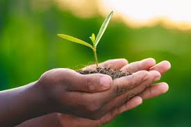

O agro (ou agronegócio) é o conjunto de atividades ligadas à produção de alimentos, fibras e matérias-primas de origem agrícola e pecuária. Ele envolve muito mais do que apenas plantar e criar animais: inclui pesquisa, fabricação de insumos, produção no campo, transporte, processamento industrial e comercialização.
